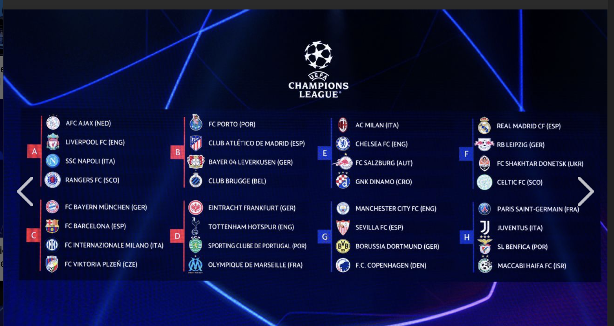

The UEFA Champions League is an annual club football competition organized by the Union of European Football Associations (UEFA). It features top European clubs competing for the title, with the most-watched club competition in the world.
Qualification Rounds

The UEFA Champions League qualification round for the 2025/26 season involved a total of 29 teams qualifying directly for the league phase. The top 8 teams after Matchday 8 automatically advanced to the round of 16, while the remaining teams competed in knockout phase play-offs. Teams finishing between 9th and 24th needed to win a two-legged playoff to reach the knockout stage. The qualifying rounds were structured into paths based on club coefficients, with winners advancing further in the playoffs
League Phase

A total of 36 teams participate in the league phase, which includes teams that qualified directly based on their domestic league performance and those that advanced from the qualifying rounds. Instead of traditional groups, all teams are placed in a single league table. Each team plays eight matches (four home and four away) against different opponents. Points are awarded as follows: three for a win, one for a draw, and none for a loss. The top eight teams automatically qualify for the knockout stage, while teams finishing 9th to 24th enter a two-legged playoff to secure their place in the Round of 16. Teams finishing 25th or lower are eliminated from the competition.
Knockout Stages

The knockout phase consists of two-legged matches, where teams compete to advance to the next round. The final match is a single-leg event held at a neutral venue. The knockout rounds include the Round of 16, quarter-finals, semi-finals, and the final, where the ultimate champion is crowned.